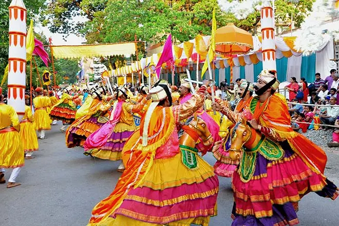

Festivals in Goa
Goa is known for its vibrant festivals that reflect the rich culture and traditions of the region. Some of the major festivals celebrated in Goa include:
- Carnival: The Goa Carnival is one of the most famous and unique festivals in India, held every year in February or March. Introduced by the Portuguese, this four-day festival is marked by grand parades with colorful floats, energetic music, and street dancing. Panaji, Margao, Vasco, and Mapusa host the largest processions, and the celebration culminates in a feast of traditional Goan delicacies. King Momo, the central figure of the carnival, leads the festivities, spreading the message of fun and cheer.
- Shigmo: Shigmo, Goa’s version of Holi, is a spring festival celebrated primarily by the Hindu community. Villages come alive with traditional folk dances like Fugdi and Dhalo, and colorful processions depicting scenes from Indian mythology. The festival marks the end of the harvest season and is a visual treat with bright colors, traditional attire, and music filling the air. It usually occurs in March, during the full moon period.

- Ganesh Chaturthi: Ganesh Chaturthi, locally known as Chavath, is one of the most widely celebrated Hindu festivals in Goa. Families bring home intricately crafted idols of Lord Ganesha, decorate their homes with flowers and rangoli, and offer traditional dishes like modak and patoli. Public pandals are set up in villages and towns, hosting cultural events and devotional music. The festival ends with the immersion of the idols in rivers, accompanied by joyous processions and chants.
- Diwali: The festival of lights, Diwali, is celebrated with much enthusiasm in Goa. Homes are adorned with diyas, colorful lights, and intricate rangoli patterns. A unique Goan tradition during Diwali is the burning of "Narkasur" effigies, symbolizing the victory of good over evil. These effigies, created by locals, are paraded around before being set ablaze in a grand spectacle. The festival also features fireworks, family gatherings, and the exchange of sweets.
- Christmas: Christmas in Goa is a magical time when the state is lit up with festive decorations, and the air is filled with carols. Midnight Mass is the highlight of Christmas Eve, with churches like the Basilica of Bom Jesus and Se Cathedral hosting grand services. Streets are lined with star-shaped lanterns, nativity scenes, and Christmas trees. The celebrations also include feasts featuring roast turkey, bebinca, and other Goan specialties.